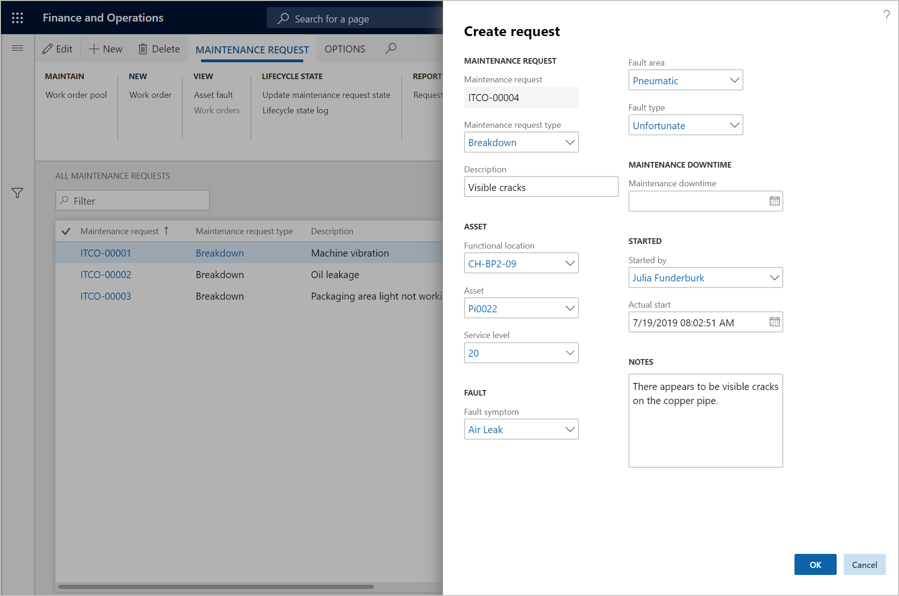
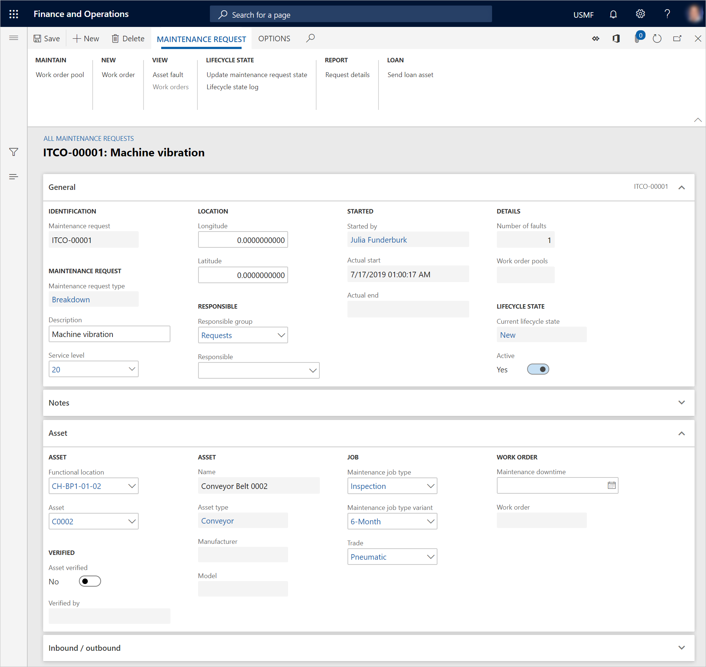

Wartungsanfragen erstellen
Important
Dynamics 365 for Finance and Operations hat sich zu speziell entwickelten Anwendungen entwickelt, mit denen Sie bestimmte Geschäftsfunktionen verwalten können. Weitere Informationen zu diesen Änderungen finden Sie im Dynamics 365-Lizenzierungshandbuch.
Wartungsanfragen können verwendet werden, wenn Wartungsarbeiter oder Produktionsarbeitskräfte bemerken, dass Maschinen eine Reparatur erfordern, die Reparaturarbeiten aber nicht sofort ausgeführt werden können.
Beispiel: Während eine Wartungsarbeiterin eine Reparatur durchführt, stellt sie fest, dass eine andere Anlage am gleichen Standort gewartet werden muss. Die Wartungsarbeiterin hat jedoch nicht die Zeit oder erforderlichen Ersatzteile, um die Reparatur durchzuführen. Aus diesem Grund erstellt sie eine Wartungsanfrage für die Anlage und gibt eine kurze Beschreibung des Problems ein.
Der Abschnitt Aktive Wartungsanfragen des Bereichs Zugehörige Informationen rechts auf der Seite Alle Anlagen oder Aktive Anlagen (Anlagenverwaltung > Allgemeines > Anlagen > Alle Anlagen oder Aktive Anlagen) enthält die aktiven Wartungsanfragen, die der ausgewählten Anlage zugeordnet sind.
Wählen Sie Anlagenverwaltung > Allgemein > Wartungsanfragen > Alle Wartungsanfragen oder Aktive Wartungsanfragen aus.
Wählen Sie Neu aus.
Wählen Sie im Dialogfeld Anforderung erstellen im Feld Wartungsanfragetyp den Typ der Wartungsanfrage aus. Ein Standardtyp wird vorgeschlagen.
Geben Sie im Feld Beschreibung einen Namen oder einen Titel ein, der die Wartungsanfrage kurz beschreibt.
Wählen Sie in den Feldern Funktionaler Standort und Anlage einen funktionalen Standort oder eine Anlage oder eine Kombination eines funktionalen Standorts und einer Anlage aus (je nach Anforderung). Sie können eine Wartungsanfrage erstellen, ohne eine Anlage auszuwählen, und die Anlage kann der Wartungsanfrage erst später hinzugefügt werden. Wenn der Wartungsarbeiter, der angemeldet ist, einer Ressource zugeordnet ist, die zu einer Anlage gehört, wird das Feld Anlage automatisch festgelegt.
Wenn der ausgewählten Anlage bereits eine Wartungsanfrage zugeordnet ist, wird oben im Dialogfeld Anforderung erstellen eine Meldungsleiste angezeigt, Sie Ihnen die Kennung der Wartungsanfrage mitteilt. Eine Meldungsleiste informiert Sie auch darüber, wenn die Anlage von einer Garantievereinbarung abgedeckt ist.
Wählen Sie im Feld Leistungsebene eine Leistungsebene aus, die die Dringlichkeit der Anforderung angibt.
Wenn Sie in Schritt 5 eine Anlage ausgewählt haben, können Sie die Felder Fehlersymptom, Fehlerbereich und Fehlertyp verwenden, um eine Fehlererfassung zu erstellen.
Wenn die Wartungsanfrage eine Wartungsausfallzeit verursacht hat, geben Sie Startdatum und -zeit der Ausfallzeit ein.
Im Feld Gestartet von wird automatisch Ihr Name eingetragen.
Das Feld Tatsächlicher Start wird automatisch auf das aktuelle Datum und die aktuelle Uhrzeit festgelegt. Allerdings können Sie den Wert in diesem Feld ändern.
Geben Sie im Feld Hinweise zusätzliche Hinweise ein, die erforderlich sind.
Wählen Sie OK.

Nachfolgende Verarbeitung von Wartungsanfragen
Nachdem eine Wartungsanfrage erstellt wurde – jedoch bevor sie in einen Arbeitsauftrag umgewandelt wird –, sollten in der Anforderung verschiedene Informationen aktualisiert werden. Normalerweise wird diese Aufgabe von einem Planer oder einem anderen Sachbearbeiter erledigt.
- Wählen Sie auf der Seite Alle Wartungsanfragen oder Aktive Wartungsanfragen die Anforderung aus, mit der gearbeitet werden soll. Wählen Sie dann Bearbeiten aus.
In der Detailansicht können Sie verschiedene Informationen aktualisieren. Nachfolgend finden Sie einige Beispiele:
- Wählen Sie die Anlage aus, und überprüfen Sie sie. Wenn Sie später eine andere Anlage auswählen müssen, können Sie die Option Anlage geprüft auf Nein festlegen.
- Wählen Sie eine zuständige Wartungsarbeitergruppe und/oder einen zuständigen Wartungsarbeiter aus. Weitere Informationen zu den erforderlichen Einstellungen finden Sie unter Zuständige Wartungsarbeitskräfte.
- Wählen Sie einen Wartungsauftragstyp aus. Wenn diese Information relevant ist, wählen Sie auch eine zugehörige Wartungsauftragsvariante und eine Facharbeit aus.
- Geben Sie in den Feldern Breitengrad und Längengrad die geografischen Koordinaten ein. Sämtliche Koordinaten, die einer Wartungsanfrage hinzugefügt werden, werden automatisch an einen zugehörigen Arbeitsauftrag übertragen.

Note
Wenn Sie bei der Erstellung einer Wartungsanfrage eine Anlage auswählen, können Sie der Anlage einen Fehler hinzufügen. Nachdem die Wartungsanfrage erstellt wurde, können Sie ggf. weitere Fehler hinzufügen. Um Fehler hinzuzufügen, wählen Sie auf der Seite Alle Wartungsanfragen die Option Anlagenfehler aus.